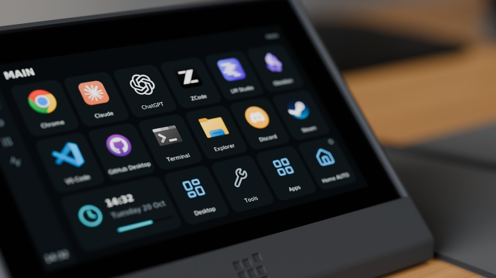
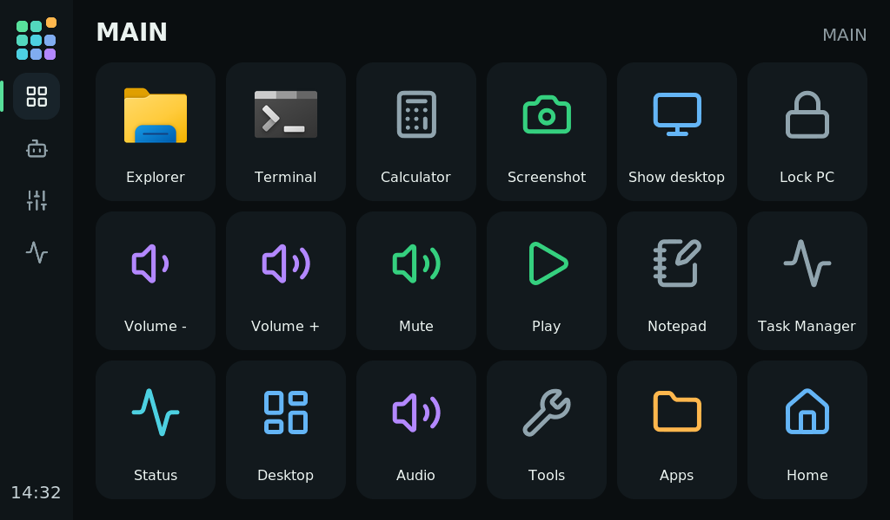
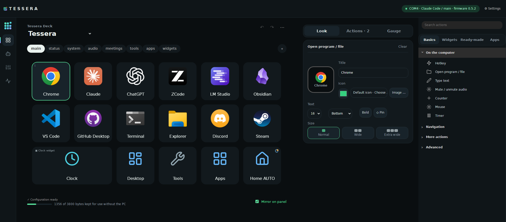
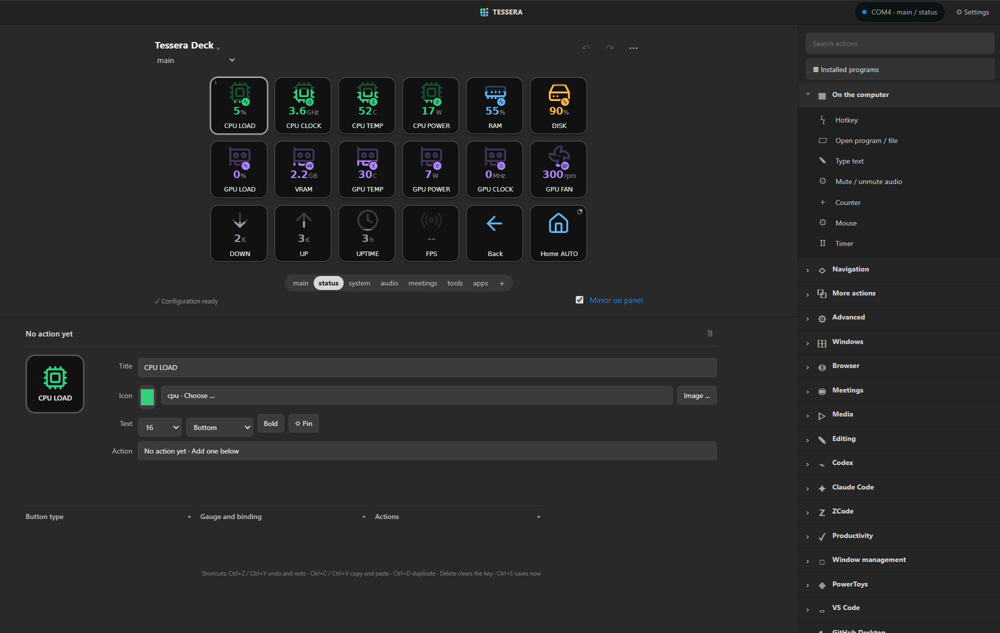
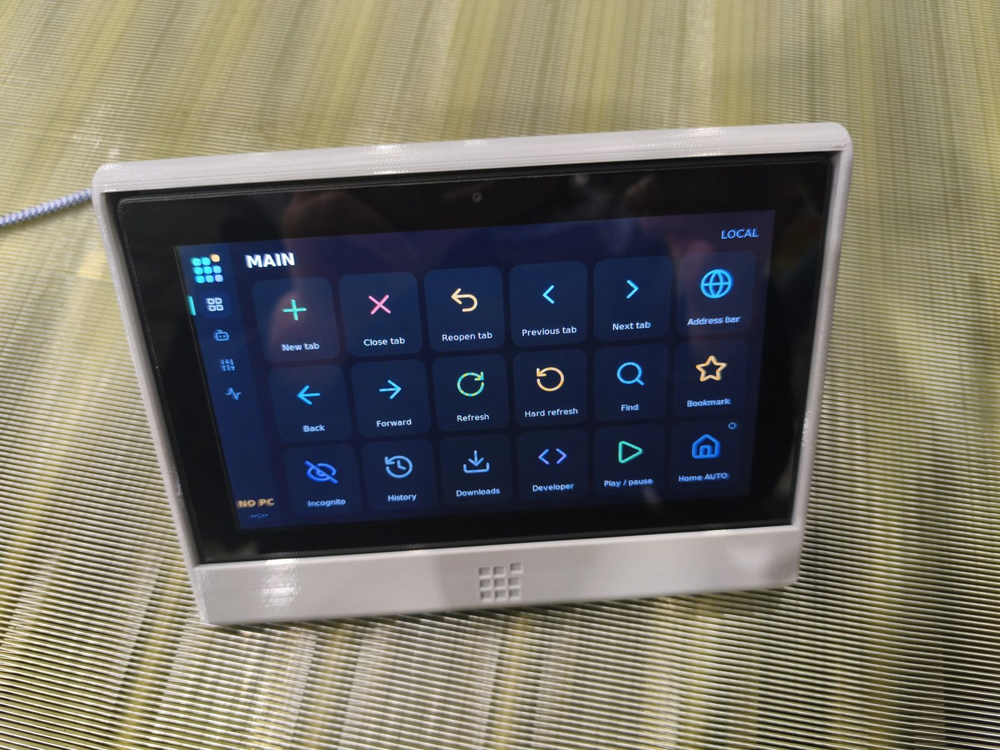
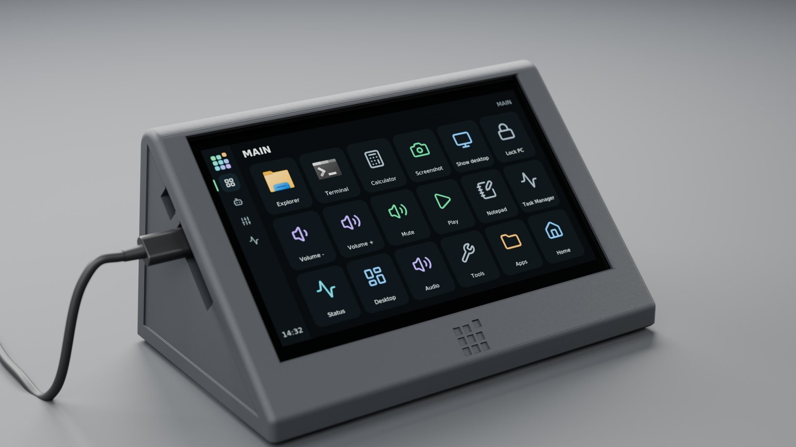
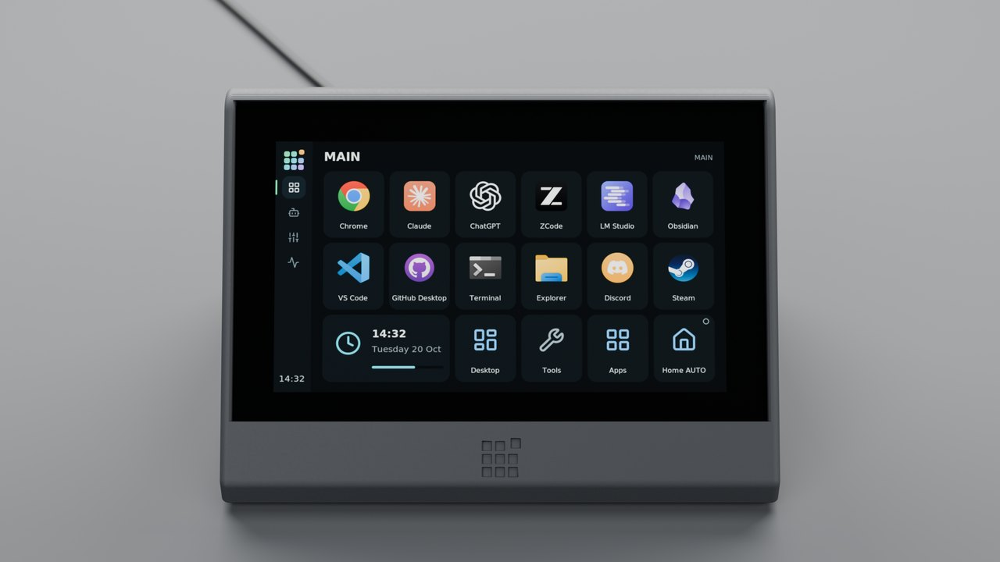
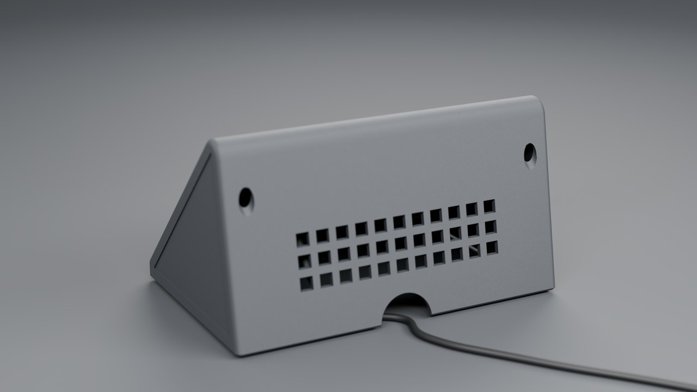
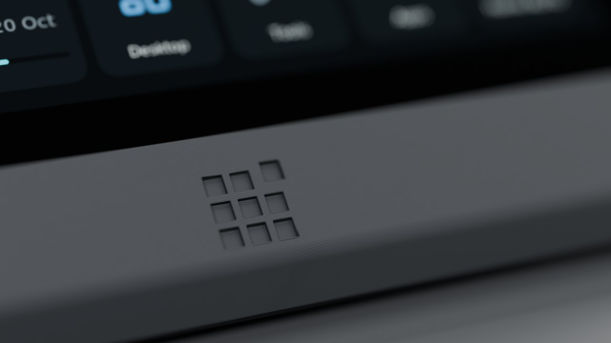

One 7-inch touchscreen, a deck you build yourself.
Tessera turns a 7-inch ESP32-P4 touchscreen, such as the GUITION JC1060P470C, into a macro deck: 18 touch keys for apps, hotkeys and macros, plus widgets, live PC gauges, a sound mixer and a screen that answers your AI agent. It works without soldering, an account or the cloud.
Open source under the MIT licence. v1.2.11 runs on Windows 10 and 11 and on Linux with X11, or KDE Plasma or GNOME on Wayland. On GNOME, window actions and smart profiles need Tessera's extension for GNOME Shell, which is marked for GNOME 51 only.

A Blender render of the printed console with the panel's real screen.
Your apps, hotkeys and macros on a 7-inch touchscreen.
The panel shows a 6 × 3 grid of keys on a 1024 × 600 touchscreen. A key can cover two or three slots and show a widget. It talks to a small host on the PC over one USB cable and keeps the last layout for when the PC is off.
The board price is the AliExpress street price in November 2026, and it changes.
The panel's screens, drawn by its own firmware.
The rail on the left of the panel switches between your keys, the AI agents, a sound mixer and the PC's status.



The stills come from the panel's own LVGL interface in a native build at 1024 × 600. The agents and mixer screens show sample data.
Claude Code asks, and you answer on the panel.
When Claude Code wants permission to run something, the question shows on the agents screen. Touch Allow or Deny. The same screen shows what Claude Code, Codex and ZCode are doing, since when and in which project.
- In the editor, open More → Connect Claude Code.
- Tick what you want on the panel and press Apply.
- Restart Claude Code.
This adds hooks to ~/.claude/settings.json, keeps your other hooks and makes a backup first. Tessera never allows anything on its own. If the panel is not connected, or nobody answers within 25 seconds, Claude Code shows its normal dialog.
| The tool | Buttons on the panel |
|---|---|
| Asks a permission question | Deny and Allow |
| Waits in its own window | Open |
| Is working | Open and Stop |
| Is idle | Open |
Wide keys show widgets, and a key takes more than a tap.
Widgets
| Clock | The time, the weekday and date, and how far the day is |
|---|---|
| Date | The date, the week number and the day of the year |
| Processor, graphics card | Load with a bar, temperature, clock speed or frames per second |
| Memory | How much memory is in use |
| Network | Download and upload speed |
| Volume | Speaker level, muted or not, and the microphone |
| AI agents | Which AI tools are working and which wait for you |
| Next meeting | Its name and when it starts, from your calendar's iCal address |
| Music | The track, the artist and how far it is |
| Timer | The time left of a named timer, as a ring |
Touch
| Tap | Runs the key's actions |
|---|---|
| Hold for 0.4 s | Runs the key's Held actions, if it has any |
| Hold Home | Locks the profile, so the panel stops following the program in front. Hold again to unlock |
| Two quick taps | Run the Double-press actions |
| Hold to confirm | Runs only after a 0.6 s hold while a ring fills. Lifting earlier does nothing |
| Swipe right | Goes back, and never presses the key it starts on |
| Touch a dark screen | Wakes the panel without pressing a key |
Home turns orange while the profile is locked. Swipe back has run only in the firmware's own tests so far. VERIFICATION.md lists what was checked on a panel.
Drag keys into place and the editor saves as you go.
Set up keys, pages and profiles in a drag-and-drop editor on your PC. Start from ready-made actions and profile templates for Windows, VS Code, browsers, meetings, media, Codex, Claude Code and ZCode, and give each key a real app icon or one of the bundled icons.



Profiles can follow the program in front, with a lock key to stay put. A Getting started checklist ticks itself off as you go.
Drive the panel from your own scripts.
The host has a control API on 127.0.0.1 and a command line, deckctl. A script can set a variable that a key's label or colour follows, show a page, press a key or put a short message on the panel.
python host\deckctl.py var claude working # a label can show $(var:claude) python host\deckctl.py state 3 next # step a toggle key python host\deckctl.py page main status # show a page python host\deckctl.py press 5 # press key 5 python host\deckctl.py say Build passed --level ok
Automatic actions
A rule runs the steps of a key without a press:
- When the host starts
- Every so many seconds, or every day at a set time
- When a file changes
- When a variable changes, or takes one value
Plugins
A plugin is a separate program with its own limited token. It sets values, reads key presses and takes commands from a key. The editor asks before a plugin first runs and lists what it may do. Plugins for Home Assistant and OBS Studio come with Tessera, and PLUGINS.md shows how to write one.
Each token is limited to 20 calls a second, and every change is logged with the caller's name.
Built for the desk, open source under the MIT licence.
Stays on your PC
Tessera needs no account, cloud or subscription. The panel has no network and speaks only to the host over USB. The editor and the control API listen on 127.0.0.1 only.
Pages follow the app in front
Profiles switch with the program, process or window title in front and go back when it loses focus. A lock key keeps the profile you are on.
Macros with more than a tap
Multi-step actions, toggle keys with up to eight states, counters and timers. Microphone, speaker and media keys show the real Windows state.
Live gauges
CPU, GPU, VRAM, RAM, disk, network, temperatures, power, fan speed and FPS, in the gauge's colour with amber and red at the thresholds.
Keeps going
The panel keeps the last layout for when the PC is off. A watchdog restarts a panel that hangs, and the bootloader rolls back a firmware update that crashes.
Backups and careful imports
Tessera keeps rotating backups you can restore. An import shows every command and automatic rule before it can run, and an export leaves out passwords and your calendar address.
A printed console for the GUITION and CrowPanel boards.
Each console reclines the screen 45° and hides the cables behind it. Both print in PLA or PETG and are drawn to need no supports. The GUITION console takes the panel in its factory housing, held by its own weight or by four small screws. The CrowPanel console takes the bare board on four M3 screws. A lighter open dock holds the GUITION panel at 30°.





The GUITION console from the front, from behind and up close, rendered in Blender.
STL and STEP files, the FreeCAD and Blender models and the renders are in the repository, with the print settings. GUITION does not state the thread in the panel's corner posts: try an M2 screw first.
The 7-inch boards it runs on.
GUITION JC1060P470C
The main board, about $35 to $42 on AliExpress. Tested on hardware, and every release has its firmware. Newer boards with a v3.x chip take a package of their own, which a user runs on a v3.2 board.
Elecrow CrowPanel Advance 7.0
Works on a contributor's board, colors and touch included, and the release has its firmware. CROWPANEL.md has the details.
Waveshare ESP32-S3-Touch-LCD-7
Experimental. The release has its firmware, and one tester has the display, touch, keys and PC actions working. S3.md lists what is untested.
Sunton ESP32-8048S070
Experimental. The release has its firmware, but it has not run on the board yet.
Elecrow CrowPanel Advance 7.0 ESP32-S3
Experimental, for hardware V1.3 to V1.5. The release has its firmware, and one tester has the display, touch and brightness working on a V1.5 board.
Next to a Stream Deck.
Tessera costs the board and comes with widgets, a mixer, PC status and the AI agents screen, under the MIT licence. You give up the feel of real keys, since Tessera is a glass touchscreen, and there is no marketplace.
| Tessera | Stream Deck | |
|---|---|---|
| Price | $35 to $42 for the board | $149.99 for the MK.2, $249.99 for the XL |
| Keys | 18 per page on glass, up to three slots wide | 15 physical keys on the MK.2, 32 on the XL |
| Presses | Tap, long press and double press each run their own steps. There is no press and release yet | Separate key-down and key-up events |
| Integrations | Hotkeys, programs, text, shell and web requests, and local plugins with permissions | Marketplace plugins for OBS, Discord and more |
| Profiles | Its own JSON format. It cannot import Stream Deck profiles | Stream Deck profiles, shared between users |
Prices are US list prices from November 2026. Tessera is not affiliated with Elgato.
Three steps, no toolchain.
Unpack and start
Unpack the host zip from the latest release and double-click Tessera.cmd. The first start installs Python if it is missing, puts a shortcut on the Desktop and opens the editor.
Flash the panel
Connect the board with USB. In the editor, Panel → Panel firmware and updates installs the firmware that comes in the zip. A new board needs Full install once.
Add a key, press it
Click an action in the list and it becomes a key. Press it on the panel and the editor says "It works".

Download a release, or build it yourself.
The release has a host zip with the host, the editor and the panel firmware, and a firmware zip for each board, with SHA-256 checksums and a build attestation for the zips. Tessera is not code-signed, so Windows SmartScreen may warn: compare the hash first.
# from the latest release tessera-host-v1.2.11.zip # Windows: unpack, then double-click Tessera.cmd # Linux (X11, or Plasma or GNOME on Wayland): unpack, then run ./Tessera.sh
# in an ESP-IDF 6.1 shell # stop the host first: it owns the port git clone https://github.com/catorendal-a11y/tessera-deck cd tessera-deck idf.py -B build/idf6 build idf.py -B build/idf6 -p COMx flash
Before you build one.
What do I need?
The GUITION 7-inch ESP32-P4 display dev board, model JC1060P470C (1024 × 600, about $35 to $42 on AliExpress), or one of the other boards, a USB cable and a PC with Windows 10 or 11, or Linux in an X11 session or on KDE Plasma or GNOME under Wayland. The cable goes to the USB Serial/JTAG port, or to the UART port on the CrowPanel boards and the Sunton board. The host needs Python 3.11 or newer; the first start installs it with winget if it is missing. You need no Wi-Fi and no soldering.
Does it run on another board, or on macOS or Linux?
The Elecrow CrowPanel Advance 7.0, another ESP32-P4 board with a 1024 × 600 screen, has its own build. It works on a contributor's board, colors and touch included. Its firmware is in the release, and docs/CROWPANEL.md has the details. There is also an experimental build for three ESP32-S3 boards with an 800 × 480 screen: the Waveshare ESP32-S3-Touch-LCD-7, the Sunton ESP32-8048S070 and the ESP32-S3 version of the CrowPanel Advance 7.0. One tester runs it on the Waveshare board and another on a CrowPanel V1.5, the Sunton build has not run on a board yet, and docs/S3.md lists what is untested. Other boards need a port. The host runs on Windows and on Linux in an X11 session, or in KDE Plasma or GNOME on Wayland; other Wayland desktops and macOS are not supported. CONTRIBUTING.md says what a port takes; open an issue with the board's name and resolution.
What does it not do yet?
Counters and timers live in the host, so they stop when the PC is off. There are no press and release actions such as push-to-talk, no import of Stream Deck profiles and no signed installer. Wayland desktops other than KDE Plasma and GNOME are not supported, nor is macOS, and the interface is in English only. The roadmap has the list.
Does it send anything to the internet?
Only what you ask for: the update check on GitHub, the clock's weather from Open-Meteo, online icons from Iconify, your own HTTP actions and calendar, and the plugins you turn on. The bundled plugins only reach your own Home Assistant and OBS. Setup also downloads Python packages from PyPI, pinned by hash, and Libre Hardware Monitor if you turn on the optional sensors. SECURITY.md lists every connection.
What happens when the PC is off?
The panel keeps the last layout and shows it while the PC is off. Actions run on the PC, so keys need the host. A watchdog restarts the panel when the screen or USB loop hangs, and the bootloader rolls back an update that crashes or hangs before it confirms itself. All three were tried on a panel; VERIFICATION.md in the repository has the results.
Does it work with Home Assistant?
Through the PC, yes: the bundled plugin runs Home Assistant actions from keys. On the esphome-beta branch the panel can also join your Wi-Fi and show up through the ESPHome integration, with keys that work while the PC is off. That beta is not in the release yet.
Licence and contributing?
MIT. ESP-IDF, LVGL, cJSON, the Lucide icons (ISC), the DejaVu fonts and the optional Libre Hardware Monitor (MPL-2.0) keep their own licences. Bug reports, ideas, ports and pull requests are welcome.
Home Assistant over Wi-Fi is a beta. It lives on the esphome-beta branch and is not in v1.2.11. It runs on one panel and works with aioesphomeapi, the library Home Assistant uses for ESPHome devices, but it has not been tried in a full Home Assistant install yet. Reports in issues are welcome.